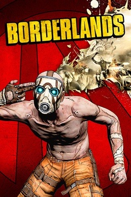
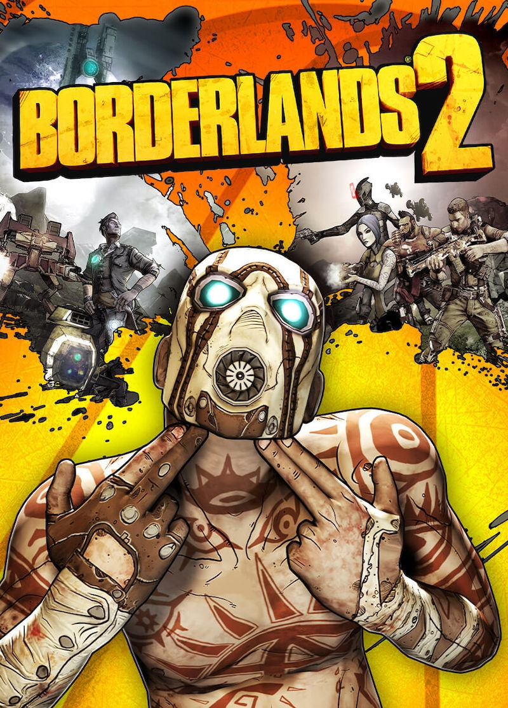

Borderlands
Leer más

Borderlands es una serie de videojuegos de acción y disparos en primera persona ambientados en escenarios space western y de ciencia ficción fantástica, desarrollados por Gearbox Software para múltiples plataformas. La serie ha sido un éxito tanto crítica como comercialmente debido a sus mecánicas de juego multijugador cooperativo y a su sentido del humor. En febrero de 2015, alrededor de 23 millones de copias de Borderlands habían sido vendidas.